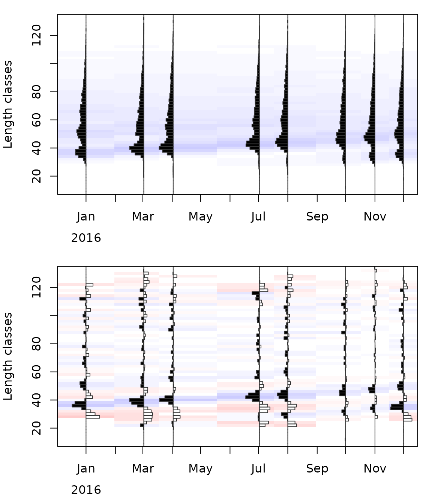
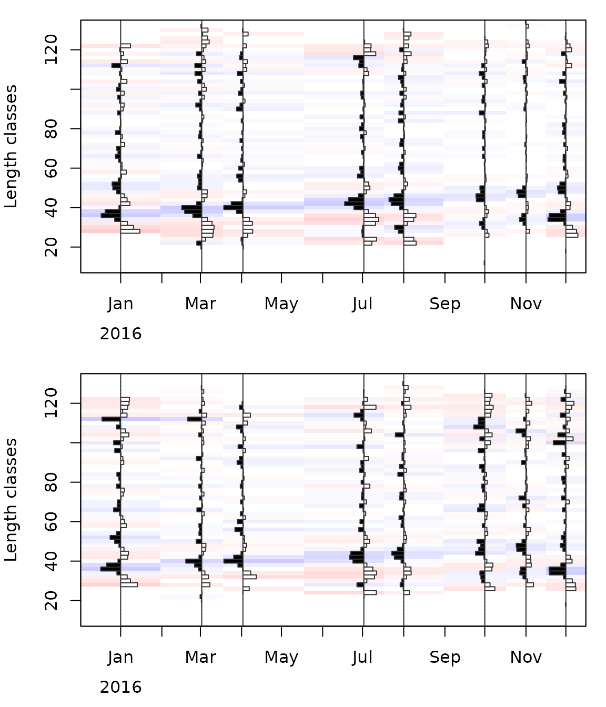
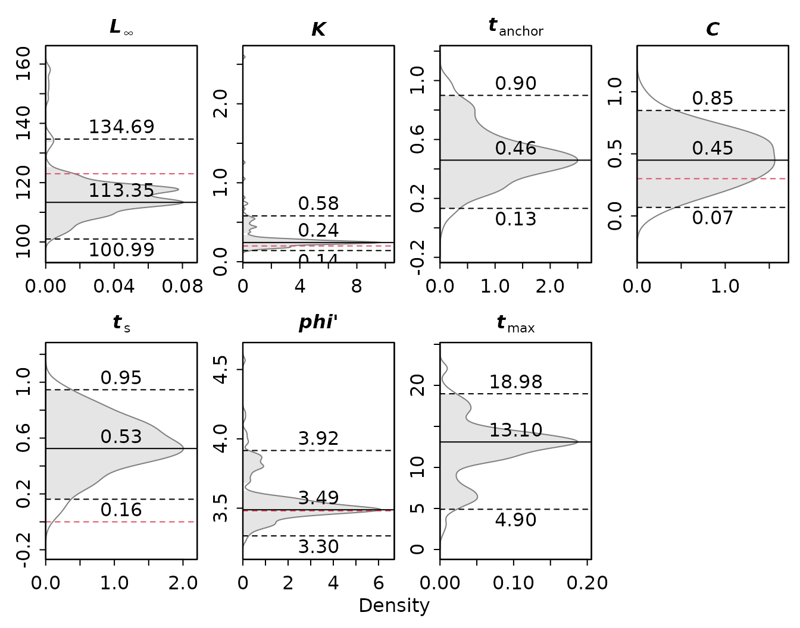
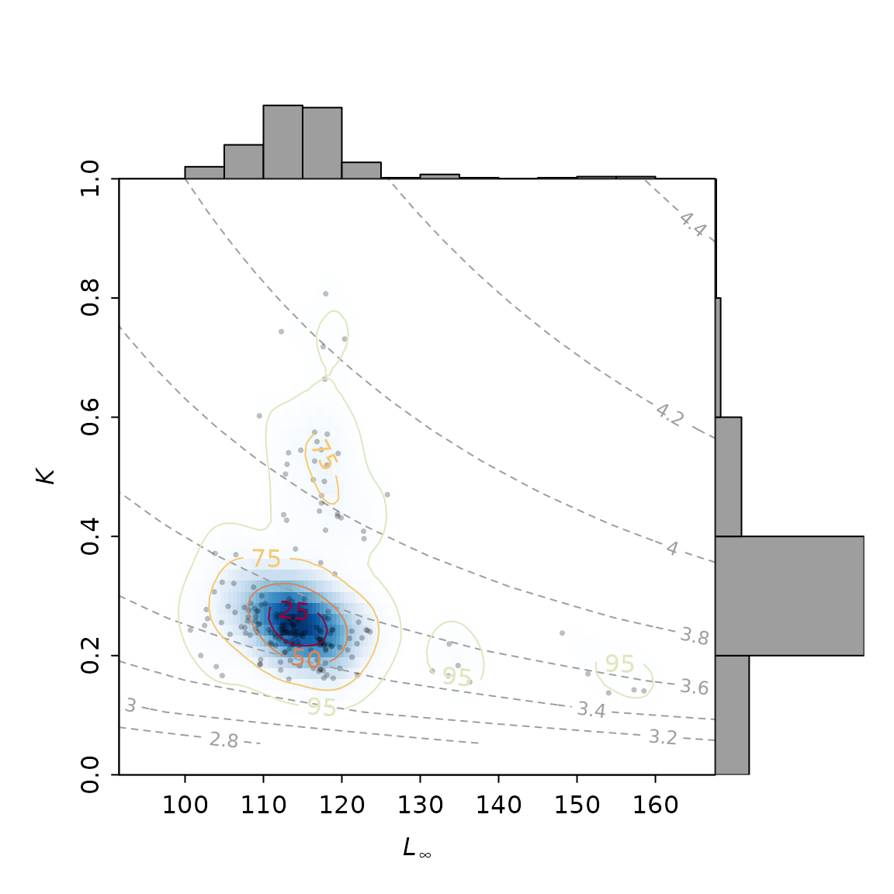
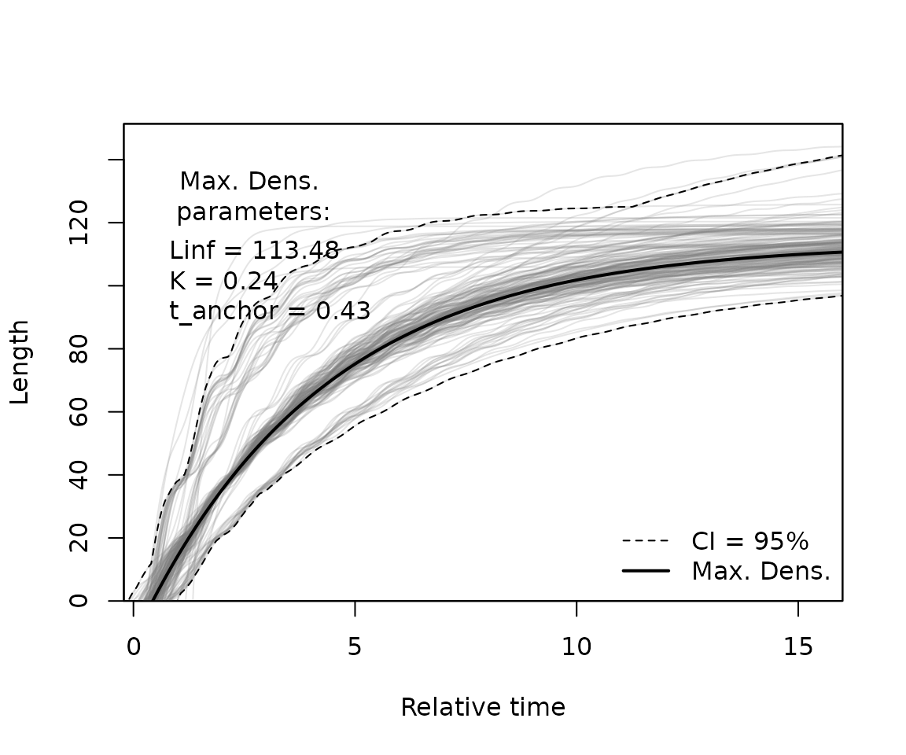
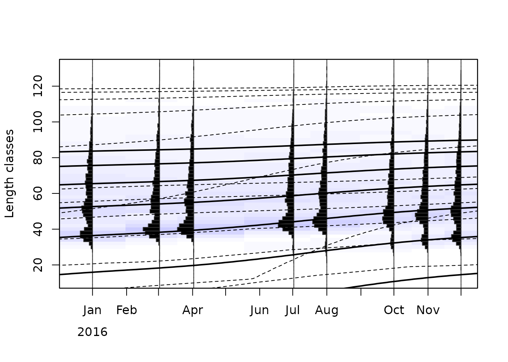
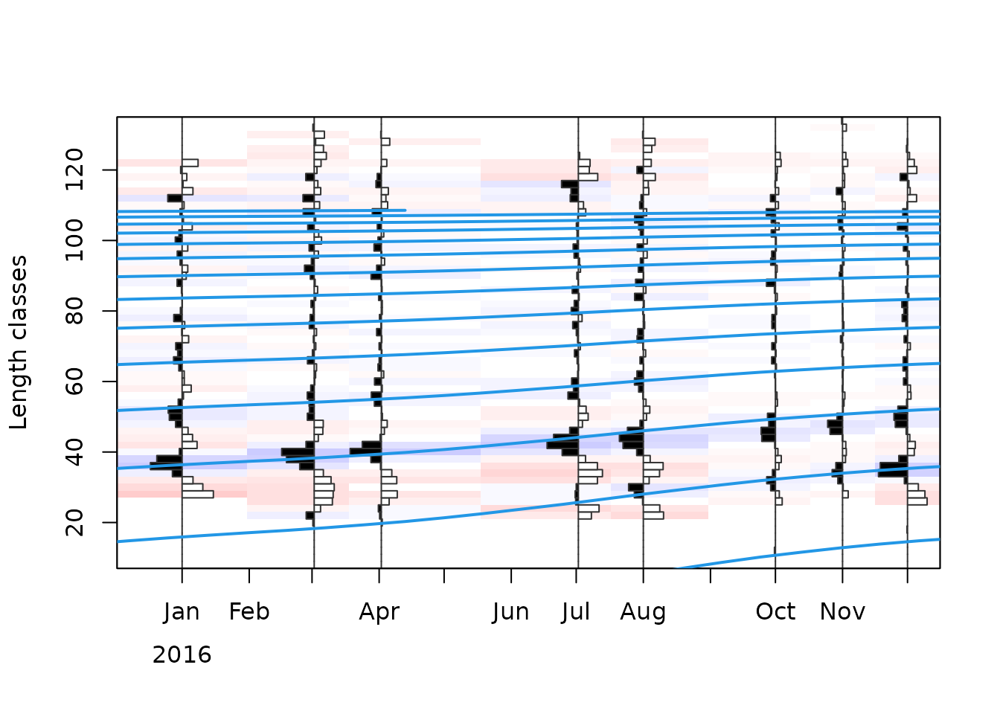
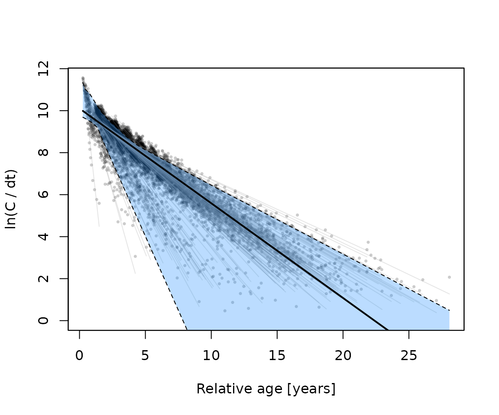
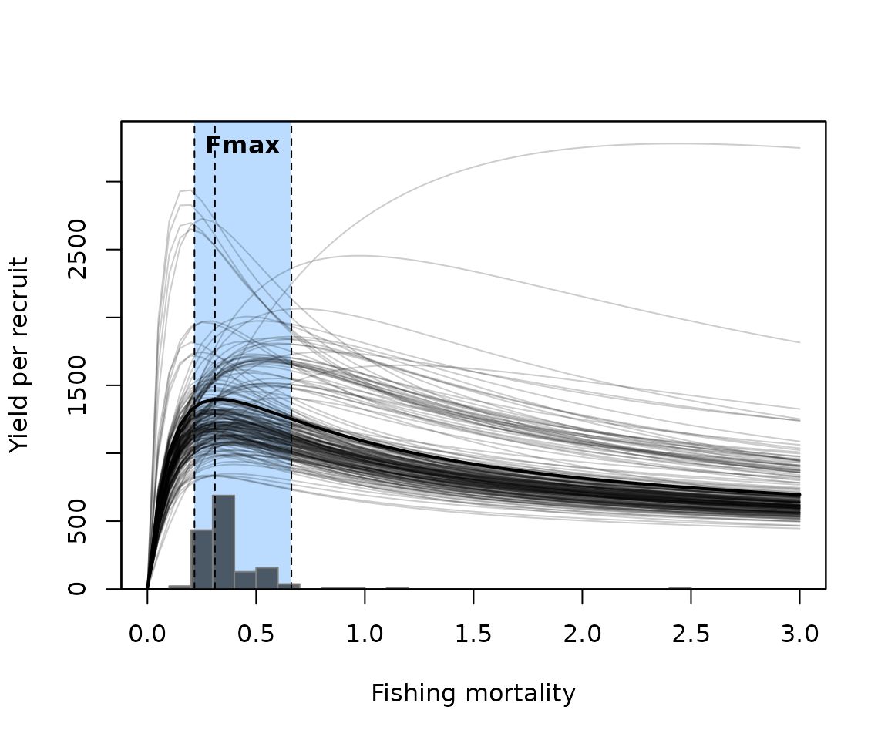

Uncertainty in length-based stock assessment with bootstrapped ELEFAN
Source:vignettes/bootstrap_ELEFAN.Rmd
bootstrap_ELEFAN.RmdIf you use bootstrapped ELEFAN, please cite Schwamborn et al. (2019) in addition to TropFishR (see
citation("TropFishR")).
Introduction
The ELEFAN functions of TropFishR (ELEFAN,
ELEFAN_SA and ELEFAN_GA) estimate the
parameters of the von Bertalanffy growth function (VBGF) from
length-frequency (lfq) data (Taylor and
Mildenberger 2017). They return a single best set of parameters,
but no information about how certain these estimates are. Uncertainty
arises from the sampling of the lfq data (which fish were measured) and
from the optimisation itself (different runs can end in different local
optima).
Bootstrapped ELEFAN (Schwamborn et al. 2019) quantifies this uncertainty: the lfq data is resampled many times, ELEFAN is fitted to each resampled data set, and the distribution of the resulting estimates is used to derive the most likely parameters and their confidence intervals. The growth parameters of each resample can then be used in the following steps of a length-based stock assessment, so that the uncertainty is propagated to mortality rates and reference points. This vignette shows how to
- resample lfq data (
lfqResample), - run bootstrapped ELEFAN (
ELEFAN_GA_boot,ELEFAN_SA_boot), - summarise and plot the results (
univariate_density,LinfK_scatterhist,vbgfCI_time,plotBoot), - estimate natural, total and fishing mortality, selectivity and
reference points for each resample (
M_empirical,MstochThen,catchCurve,VPAandpredict_modwith the argumentboot).
The ELEFAN tutorial explains the ELEFAN functions and their settings in more detail.
Data
We use the synthetic data set synLFQ7, which was
simulated with known growth parameters (see ?synLFQ7):
= 123 cm,
= 0.2
year,
= 0.3,
= 0, and recruitment around April
(
between 0.16 and 0.34). Knowing the true values allows us to judge the
bootstrapped estimates.
library(TropFishR)
data(synLFQ7)
lfq <- synLFQ7
## true parameters of the simulation
true_par <- c(Linf = 123, K = 0.2, C = 0.3, ts = 0,
phiL = log10(0.2) + 2 * log10(123))
MA <- 9
op <- par(mfrow = c(2, 1), mar = c(4, 4, 1, 1))
plot(lfq, Fname = "catch")
plot(lfqRestructure(lfq, MA = MA), Fname = "rcounts")
Length-frequency data of synLFQ7: (a) catches and (b) restructured data with a moving average over 9 length classes (MA = 9).
par(op)The moving average (MA) can significantly affect the
results (Taylor and Mildenberger 2017). As
a rule of thumb, it should approximate the number of length classes
spanned by the smallest (youngest) cohort and has to be an odd number
(see the ELEFAN tutorial). Here, MA = 9 separates the
cohorts well.
Resampling of length-frequency data
lfqResample draws, for each sample (date), as many fish
as were measured, with replacement and with probabilities proportional
to the observed frequencies. A resampled data set therefore has the same
number of fish per sample, but different frequencies by length
class:
set.seed(1)
lfq_resampled <- lfqResample(lfq)
## same number of fish per sample
totals <- rbind(original = colSums(lfq$catch), resampled = colSums(lfq_resampled$catch))
colnames(totals) <- format(lfq$dates, "%d %b")
totals
## 01 Jan 02 Mar 02 Apr 02 Jul 01 Aug 01 Oct 01 Nov 01 Dec
## original 3595 3649 3652 3513 3557 3163 3347 3395
## resampled 3595 3649 3652 3513 3557 3163 3347 3395
op <- par(mfrow = c(2, 1), mar = c(4, 4, 1, 1))
plot(lfqRestructure(lfq, MA = MA), Fname = "rcounts")
plot(lfqRestructure(lfq_resampled, MA = MA), Fname = "rcounts")
Restructured length-frequency data: (a) original and (b) resampled data.
par(op)The differences between the original and the resampled data reflect how different the data could have been if other fish of the same population had been measured.
Bootstrapped ELEFAN
ELEFAN_GA_boot resamples the data nresamp
times and fits ELEFAN_GA to each resampled data set;
ELEFAN_SA_boot does the same with ELEFAN_SA.
Most arguments are passed on to ELEFAN_GA or
ELEFAN_SA. As for single ELEFAN fits, the search space
(low_par, up_par) and the moving average
(MA) have to be adjusted to the data:
## lower and upper limits of the search space
low_par <- list(Linf = 100, K = 0.01, t_anchor = 0, C = 0, ts = 0)
up_par <- list(Linf = 160, K = 3, t_anchor = 1, C = 1, ts = 1)
## genetic algorithm: population size, maximum number of generations, number of
## generations without improvement before stopping, probability of mutation
popSize <- 60
maxiter <- 50
run <- 10
pmutation <- 0.2
## number of resamples
nresamp <- 200Each resample takes as long as a single ELEFAN fit, so the bootstrap
takes a while: with the settings above, about 20 minutes on a single
core. The resamples are independent and can be fitted in parallel
(parallel = TRUE) on no_cores cores. For the
parallel version, TropFishR has to be installed, because each core loads
it. The argument outfile allows following the progress in a
text file. The seed makes the results reproducible:
res <- ELEFAN_GA_boot(lfq, MA = MA, seasonalised = TRUE,
low_par = low_par, up_par = up_par,
popSize = popSize, maxiter = maxiter, run = run,
pmutation = pmutation,
nresamp = nresamp, seed = 1,
parallel = TRUE, no_cores = 7)To keep this vignette short to build, the results were precomputed with the code above. We used 200 resamples here; for real assessments, more resamples (e.g. 500 or more) give more stable confidence intervals.
Results
The result is an object of class lfqBoot. Its element
bootRaw contains the estimates of each resample:
head(res$bootRaw)
## Linf K t_anchor C ts phiL agemax
## 1 113.5351 0.2595156 0.5389283 0.5430991 0.5346364 3.524424 12
## 2 118.5264 0.2370923 0.4461740 0.5250430 0.4307888 3.522548 13
## 3 112.9640 0.4270897 0.1646272 0.6610177 0.5722577 3.736399 8
## 4 107.9976 0.2583928 0.4360294 0.2952645 0.6816952 3.479108 12
## 5 113.8674 0.2505381 0.5076227 0.2607905 0.5668722 3.511673 12
## 6 131.5483 0.1743736 0.2557935 0.2080304 0.7185207 3.479651 18The growth performance index
(phiL) and the maximum age (agemax) are
derived from
and
.
Each resample is identified by its seed (res$seed) and has
a score (res$Rn_max).
The estimates are summarised by a multivariate kernel density
estimate: maxDen is the parameter combination with the
highest density, i.e. the most likely combination, median
the median of each parameter, CI the univariate (here 95 %)
confidence intervals and multiCI the range of each
parameter within the multivariate 95 % confidence region:
res$maxDen
## Linf K t_anchor C ts phiL
## 114.2471766 0.2336728 0.4315515 0.3901620 0.5676481 3.4842991
## agemax
## 13.0000000
res$CI
## Linf K t_anchor C ts phiL agemax
## lo 103.7134 0.1619116 0.1341449 0.06760033 0.1077767 3.240947 5
## up 136.6103 0.7314206 0.8999609 0.82933935 0.9403650 4.135134 19Compared to the true parameters:
pars <- c("Linf", "K", "C", "ts", "phiL")
round(data.frame(true = true_par[pars],
max_density = res$maxDen[pars],
median = res$median[pars],
CI_lower = res$CI["lo", pars],
CI_upper = res$CI["up", pars]), 3)
## true max_density median CI_lower CI_upper
## Linf 123.000 114.247 114.302 103.713 136.610
## K 0.200 0.234 0.243 0.162 0.731
## C 0.300 0.390 0.442 0.068 0.829
## ts 0.000 0.568 0.553 0.108 0.940
## phiL 3.481 3.484 3.502 3.241 4.135The confidence intervals of and include the true values, and the growth performance index is estimated very precisely. The seasonal parameters and , on the other hand, are very uncertain: their confidence intervals span almost the whole search space. Note that is periodic ( = 0 is equivalent to = 1). Such wide intervals are exactly the information that a single ELEFAN fit does not provide.
Graphs
Distributions of the parameters
univariate_density shows the distribution (kernel
density) of each parameter with the confidence interval (dashed lines)
and the value with the maximum density (solid line). Known true values
can be added with the argument truePar (red dashed lines).
The values in this plot are based on the univariate density of each
parameter; they can therefore differ slightly from
res$maxDen (multivariate density) and res$CI
(quantiles):
univariate_density(res, truePar = true_par, mfrow = c(2, 4))
Distributions of the bootstrapped estimates with 95 % confidence intervals (dashed black lines), maximum density (solid lines) and the true values (dashed red lines).
Correlation of Linf and K
Estimates of
and
are typically negatively correlated, i.e. similar growth curves can be
described by a large
with a small
and vice versa. LinfK_scatterhist shows the joint
distribution of both parameters. Isolines of the growth performance
index
can be added with phi.contour = TRUE (or to any
-
plot with add_phiprime). A few resamples ended with much
larger values of
(up to 2.6); the plot is limited to
with ylim:
LinfK_scatterhist(res, phi.contour = TRUE, ylim = c(0, 1))
Bootstrapped estimates of Linf and K (points), their bivariate kernel density (shading and contours) and isolines of the growth performance index (dashed grey lines).
Growth curves
vbgfCI_time shows the growth curves of all resamples
(grey lines) over relative time together with the confidence intervals
of the curves and the growth curve with maximum density:
ci <- vbgfCI_time(res, agemax = 15, perm.col = adjustcolor("grey50", 0.2))
Growth curves of the bootstrapped estimates (grey), the 95 % confidence interval (dashed lines) and the growth curve with maximum density (solid line).
plotBoot shows the same growth curves with confidence
intervals in the length-frequency data, one cohort per year (here
limited to an age of 6 years with agemax):
plotBoot(lfq, res, agemax = 6)
Length-frequency data with the growth curves with maximum density (solid lines) and their 95 % confidence intervals (dashed lines).
The estimates with maximum density can also be used like the results
of a single ELEFAN fit, e.g. with lfqFitCurves:
lfq_rest <- lfqRestructure(lfq, MA = MA)
plot(lfq_rest, Fname = "rcounts")
tmp <- lfqFitCurves(lfq_rest, par = as.list(res$maxDen[c("Linf", "K", "t_anchor", "C", "ts")]),
draw = TRUE, col = 4, lty = 1, lwd = 2)
Restructured length-frequency data with the growth curves with maximum density.
Reproducing resamples
Resample x uses the seed seed + x (stored
in res$seed). lfqResample with the argument
boot re-creates the resampled data sets, e.g. to inspect
the data of a resample with an unusual estimate:
lfq_resamples <- lfqResample(lfq, boot = res)
length(lfq_resamples)
## [1] 200
## resample with the smallest Linf
i <- which.min(res$bootRaw$Linf)
res$bootRaw[i, ]
## Linf K t_anchor C ts phiL agemax
## 19 100.6836 0.2428632 0.1345356 0.2810552 0.2944529 3.391279 13The fit of a single resample can be reproduced by setting its seed,
resampling the data and fitting ELEFAN_GA with the same
settings (the random numbers of the genetic algorithm follow those of
the resampling):
set.seed(res$seed[i])
lfq_i <- lfqResample(lfq)
fit_i <- ELEFAN_GA(lfq_i, MA = MA, seasonalised = TRUE,
low_par = low_par, up_par = up_par,
popSize = popSize, maxiter = maxiter, run = run,
pmutation = pmutation, plot.score = FALSE)
unlist(fit_i$par)Bootstrapped stock assessment
The functions M_empirical, catchCurve,
VPA and predict_mod accept the bootstrapping
results with the argument boot. They apply the method to
each resample, using the growth parameters of the resample and, for
catchCurve, VPA and predict_mod,
the resampled data set itself (re-created with the seeds stored in the
lfqBoot object). Each step adds its estimates as columns to
bootRaw and their maximum density (the mode of the
univariate kernel density), median and confidence interval to
maxDen, median and CI. Resamples
that cannot be analysed in a step (e.g. because no descending limb of
the catch curve is found or the natural mortality exceeds the total
mortality) get NA, and a warning gives their number. The
uncertainty of the growth parameters is thus propagated through the
whole assessment. For catchCurve, VPA and
predict_mod, lfq has to be the data set that
was used for the bootstrapped growth analysis.
In addition to the growth parameters, the simulation of
synLFQ7 used a natural mortality of
= 0.2
year,
a fishing mortality of
= 0.3
year
(i.e.
= 0.5
year),
a length at 50 % probability of capture of
= 35 cm and a length at maturity of
= 30.8 cm (see ?synLFQ7).
Natural mortality
M_empirical with boot estimates the natural
mortality rate for each resample with the empirical formulas based on
growth parameters (“Then_growth” or “Pauly_Linf”). The new column is
called M_Then (or M_Pauly):
res <- M_empirical(method = "Then_growth", boot = res)
round(rbind(maxDen = res$maxDen[c("K", "M_Then")], res$CI[, c("K", "M_Then")]), 3)
## K M_Then
## maxDen 0.234 0.306
## lo 0.162 0.221
## up 0.731 0.675Empirical estimators are uncertain themselves.
MstochThen additionally accounts for the uncertainty of the
formula of Then et al. (2015): for each
resample, M is estimated with coefficients of the formula that were
refitted to a bootstrap sample of the original data of Then et al. (2015) (see
?MstochThen). This results in wider confidence intervals.
With resid = TRUE, the scatter of the individual species
around the formula is included as well, which describes the uncertainty
of M for a single stock better but results in much wider confidence
intervals. Each resample uses its own seed (res$seed, or
see the argument seed), so the results are
reproducible:
res_stoch <- MstochThen(res)
res_resid <- MstochThen(res, resid = TRUE)
round(rbind(formula = res$CI[, "M_Then"], stochastic = res_stoch$CI[, "M_Then"],
residuals = res_resid$CI[, "M_Then"]), 3)
## lo up
## formula 0.221 0.675
## stochastic 0.149 0.641
## residuals 0.049 1.344Total and fishing mortality and selectivity
catchCurve with boot applies the
length-converted catch curve to each resampled data set, with the
catches summed over the samples of a year (see the arguments
yearSel and yearCombine for data covering
several years). The points used for the regression line are chosen
automatically for each resample (see ?catchCurve). With
calc_ogive = TRUE, the selectivity
(,
)
is estimated as well, and with natMort the fishing
mortality is calculated as
:
res <- catchCurve(lfq, boot = res, calc_ogive = TRUE, natMort = "M_Then")
pars <- c("Z", "FM", "L50", "L75")
round(rbind(maxDen = res$maxDen[pars], res$CI[, pars]), 3)
## Z FM L50 L75
## maxDen 0.451 0.145 34.897 37.753
## lo 0.332 0.074 29.674 31.023
## up 1.409 0.745 40.651 44.111plotBoot with pType = "cc" shows the catch
curves of all resamples together with the regression line with maximum
density and its confidence band:
plotBoot(boot = res, pType = "cc")
Catch curves of the resamples (grey points and lines), regression line with maximum density (black line) and 95 % confidence band (blue).
The estimates of total mortality ( = 0.45) and selectivity ( = 34.9 cm) are close to the true values. The fishing mortality with maximum density ( = 0.14), however, is lower than the true value (0.3), because the empirical formula overestimates the natural mortality of this population ( = 0.31 instead of 0.2). The true value is within the confidence interval, but the bootstrap only describes the uncertainty arising from the data and the assessment steps; it does not correct for a biased natural mortality estimate.
Yield per recruit and reference points
predict_mod with boot applies the Thompson
and Bell model to each resample, with the growth parameters, natural and
fishing mortality and the selectivity of the resample. The length class
including
of the resample is the plus group. It requires the parameters of the
length-weight relationship (a and b; here with
the weight in g, LW_unit = "g") and, for reference points
based on the spawning potential ratio (SPR), the length at maturity
(Lmat, with wmat the width of the maturity
ogive):
lfq$a <- 0.015
lfq$b <- 3
lfq$Lmat <- 30.8
lfq$wmat <- 5
res <- predict_mod(lfq, type = "ThompBell", FM_change = seq(0, 3, 0.05),
boot = res, natMort = "M_Then", LW_unit = "g")
pars <- c("F01", "Fmax", "F05", "F04", "SPR")
round(rbind(maxDen = res$maxDen[pars], res$CI[, pars]), 3)
## F01 Fmax F05 F04 SPR
## maxDen 0.232 0.311 0.152 0.193 0.474
## lo 0.180 0.216 0.108 0.138 0.157
## up 0.469 0.662 0.319 0.439 0.631The reference points are the fishing mortalities at which the slope
of the yield per recruit curve is 10 % of its slope at the origin (F01),
the yield per recruit is maximal (Fmax), the biomass per recruit is 50 %
of the unfished biomass per recruit (F05), and the SPR is 40 % (F04).
SPR is the spawning potential ratio at the current fishing
mortality. The columns FF01, FFmax,
FF05 and FF04 give the current fishing
mortality relative to the reference points; values below 1 indicate that
the current fishing mortality is lower than the reference point. Because
they are estimated for each resample, the probability that the current
fishing mortality exceeds a reference point can be derived directly:
pars <- c("FF01", "FFmax", "FF05", "FF04")
round(rbind(maxDen = res$maxDen[pars], res$CI[, pars]), 3)
## FF01 FFmax FF05 FF04
## maxDen 0.629 0.481 1.008 0.773
## lo 0.367 0.255 0.575 0.442
## up 2.825 1.687 4.189 2.988
## probability that the current F exceeds the reference points
round(colMeans(res$bootRaw[, c("FF01", "FFmax", "FF05", "FF04")] > 1, na.rm = TRUE), 2)
## FF01 FFmax FF05 FF04
## 0.26 0.10 0.60 0.32
plotBoot(boot = res, pType = "ypr", pRef = "Fmax")
Yield per recruit curves of the resamples (grey lines), the curve of the resample with the Fmax closest to its maximum density (black line), the distribution of Fmax (histogram) and its 95 % confidence interval (blue).
Instead of the selectivity estimated by the catch curve, the fishing
mortality at length estimated by a length-based virtual population
analysis can be used. The VPA requires the total catch of the stock,
while lfq has to keep the sampled numbers of fish, because
the resampling draws the measured fish. The total landings (in kg, one
value per sample) are therefore passed to VPA with the
argument landings, and each resample is raised to the total
catch (see ?VPA and ?lfqRaise):
landings <- rep(30000, length(lfq$dates)) # landings in kg per sampling date
res <- VPA(lfq, boot = res, natMort = "M_Then", landings = landings, LW_unit = "g")
res <- predict_mod(lfq, type = "ThompBell", FM_change = seq(0, 3, 0.05),
boot = res, natMort = "M_Then", bootSel = "VPA", LW_unit = "g")With bootSel = "VPA", FM_change and the
reference points refer to the maximum fishing mortality at length, which
is also used as the current fishing mortality for SPR and
FF01, ….